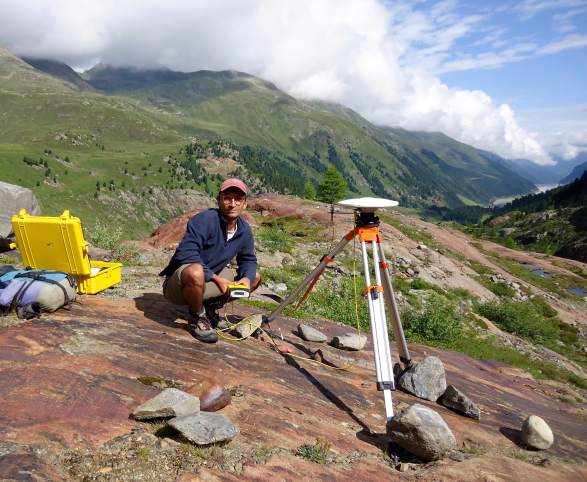

Hej! 👋🏽
I am Taimur Khan, a Data Scientist at the Helmholtz-Center for Environmental Research (UFZ). Combining advances in ML/AI and remote sensing, I aid partnered researchers and engineers in creating Digital Twin and AI systems that can replicate, monitor, and predict the Earth’s dynamic processes using modern methods in software engineering, earth observation, and computational modelling. I am also the founder of Adsata, a startup that uses AI to track user attention and engagement in digital content.


About Me
🌠Academic Background: Geosciences and Physics (Undergraduate) @ Skidmore College, Earth System Data Science and Remote Sensing (Graduate, ongoing) @ University of Leipzig.
🔬 Research Enthusiast: Unraveling Earth’s secrets through numerical and statistical models.
💻 Backend Devotee: Crafting robust and efficient systems.
🌠Web Wizard: Translating complex computations into user-friendly interfaces.
📊 AI Whisperer: Transforming raw data into meaningful models.
👨🏻‍🏫 Knowledge Sharer: Giving workshops and courses on cool methods.
What’s Cookin’
Segmenting tree crowns in multispectral imagery using deep learning.
{kind=link}
Foreceasting smog events using spatiotemporal deep learning

Secure webcam eyetracking with edge machine learning to track user attention and engagement in digital content.

Simulating tree dynamics using processing

In the news
“Die ‘Blickfänger’ von der Saale, Aspekt Magazin, 15.09.2021.
“Eyetracking für bessere Datenanalyse: Hallesches Startup in den Startlöchern†- Mitteldeutsche Zeitung, 19.08.2021.
“Eyetracking per Webcam: Adsata hat Erfolg im Blick”- Startup-Mitteldeutschland, 16.02.2021.
“Schau mir in die Augen†- Investitions- und Marketinggesellschaft Sachsen-Anhalt, 28.07.2021.
Let’s Collaborate!
🌱 Open to collaborations on exciting projects at the intersection of earth systems, physics, and technology.
💬 Hit the mail button in the menu and feel free to reach out for discussions, brainstorming, or simply a virtual chat.
© 2022 - 2024 Taimur Khan - All Rights Reserved.